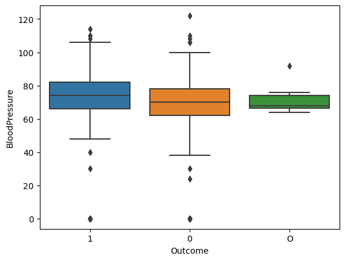
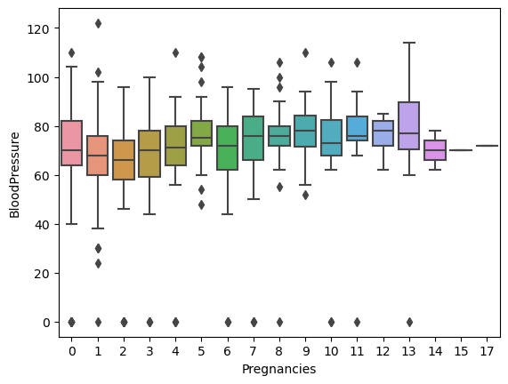
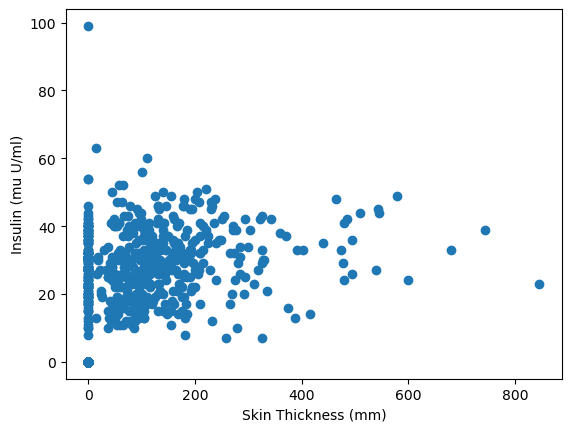

from scipy.stats import iqr
from scipy.stats import tmean
from scipy.stats import trim_mean
from scipy.stats import pearsonr
import pandas as pd
import numpy as np
import statistics
import matplotlib.pyplot as plt
import seaborn as sns47 Association between variables
47.1 Introduction
Sometimes there can be associations between variables. By applying some summary statistics we can explore more this association. We need to remember that when it comes to association between any kind of variables, the information about the value of one variable gives us information about the value of the other variable.
Having set association into this context, we can now focus more on how to work to discover if there is any association between the variables that we have.
47.2 Dataset
To further explain the examples below, we are going to use a dataset; the Prima Indians Diabetes Database.
Before we delve into the association of quantitative and categorical variables, we need to clarify some things concerning the dataset we use. All patients in this dataset are females at least 21 years old of the Pima Indian heritage.
This dataset consists of 9 columns:
Pregnancies: the number of times pregnantGlucose: plasma glucose concentration after 2 hours in an oral glucose tolerance testBloodPressure: diastolic blood pressure (mm Hg)SkinThickness: Triceps skin fold thickness (mm)Insulin: 2-hour serum insulin (mu U/ml)BMI: Body Mass Index (weight (kg)/ height(m)^2)DiabetesPedigreeFunction: diabetes pedigree functionAge: age in yearsOutcome: Class variable of 0 or 1; 268-768 are 1 and the others are 0.
47.3 Association of quantitative and categorical binary variables
An association between a categorical and a quantitative variable is for example a question like the following one:
- is salary associated to gender (for terms of simplicity and to fit to the example, it is assumed only the binary (i.e., male and female) aspect of it)?
- in this case
salarywill be the quantitative variable andgenderwill be the categorical variable.
- in this case
# load data
diabetes_data = pd.read_csv('../data/diabetes.csv')
diabetes_data.head()| Pregnancies | Glucose | BloodPressure | SkinThickness | Insulin | BMI | DiabetesPedigreeFunction | Age | Outcome | |
|---|---|---|---|---|---|---|---|---|---|
| 0 | 6 | 148 | 72 | 35 | 0 | 33.6 | 0.627 | 50 | 1 |
| 1 | 1 | 85 | 66 | 29 | 0 | 26.6 | 0.351 | 31 | 0 |
| 2 | 8 | 183 | 64 | 0 | 0 | 23.3 | 0.672 | 32 | 1 |
| 3 | 1 | 89 | 66 | 23 | 94 | 28.1 | 0.167 | 21 | 0 |
| 4 | 0 | 137 | 40 | 35 | 168 | 43.1 | 2.288 | 33 | 1 |
When there is association between quantitative variables we can start by looking at the mean and the median to see if there is any kind of association between two variables.
The size of this difference can tell a lot about the association. For example, variables that are associated with each other tend to have a large difference between mean and median.
diabetes_data.dtypesPregnancies int64
Glucose int64
BloodPressure int64
SkinThickness int64
Insulin int64
BMI float64
DiabetesPedigreeFunction float64
Age int64
Outcome object
dtype: object# since Outcome is an object, but we know that it is an integer
# (0 or 1), we change the data type accordingly
outcome_zero = diabetes_data['BloodPressure'][diabetes_data['Outcome'] == '0'].dropna(
).astype('int32')
outcome_one = diabetes_data['BloodPressure'][diabetes_data['Outcome'] == '1'].dropna(
).astype('int32')
# compute the mean difference
mean_diff = outcome_zero.mean() - outcome_one.mean()
print(abs(mean_diff))
# compute the median difference
median_diff = outcome_zero.median() - outcome_one.median()
print(abs(median_diff))2.691023626805247
4.0But how could we define ‘large’ when it comes to the difference between the median and/or the mean of two variables. To be sure about that, we need to have a look at the spreadness of the data.
47.3.1 Boxplots (side by side)
A boxplot can show the spread and, to some extent the central location of the data, and whether there are some outliers or not.
In addition to that, side-by-side boxplots, since they are good in visualizing the mean and median differences, they can also help us estimate the variation of the data and determine whether the mean or median differences are “large” or not.
sns.boxplot(data=diabetes_data, x='Outcome', y='BloodPressure')
plt.show()
plt.close()
47.3.1.1 Interpretation of the side-by-side boxplots
Looking at the boxplots, we can see that there is some overlap between the values of the two boxes (by looking at the coloured boxes), which explains the difference that we see between the mean (i..e, 4.444089694089698) and the median (i.e., 4.5).
The smaller the overlap between the values of the two boxes the bigger the difference of the mean and the median and vice versa.
47.3.2 Overallaping histograms
Another way to observe the size of the difference between a categorical and a quantitative variable is to use overlapping histograms.
To do that we need to create two different histograms, one for each category and then add some additional parameters to make them see-through.
# overlapping histograms
plt.hist(outcome_zero, color='blue', label='0', density=True, alpha=0.5)
plt.hist(outcome_one, color='red', label='1', density=True, alpha=0.5)
plt.legend()
plt.show()
To explain some of the parameters used in this visualization:
density: instead of counting it gives the density of the valuesalpha=0.5: makes the plot transparent enough so the overlapping values are still visible.
47.3.2.1 Interpretation of the overlapping histograms
By looking at the overlapping histograms, we can see that there is a moderate association between the two variables which follows the mean and median difference that was computed beforehand. While overlapping histograms and side by side boxplots can convey similar information, histograms give us more detail and can be useful in spotting patterns that were not visible in a box plot (eg., a bimodal distribution).
While the box plots and means/medians appear similar, the overlapping histograms illuminate the differences between these two distributions of scores.
47.4 Association between quantitative variable and non-binary variables
A possible question in this case : - is grades associated to areas? - in this case grades is the quantitative variable and areas is the categorical non-binary variable.
Areas can be more than two, so the best option in this case is to plot a boxplot and the observe the differences between the side-by-side boxplots.
Boxplot is the best choice in this situation. A side-by-side boxplot for each of the values in a non-binary categorical variable will allow us to compare every possible aspect of it with our quantitative variable.
We will examine the association between Pregnancies (it is not a categorical variable but for this visualization it will be considered as one) and BloodPressure. In other words, our question at this point is the following one:
Is the number of pregnancies associated with the changes in the blood pressure?
sns.boxplot(data=diabetes_data, x='Pregnancies', y='BloodPressure')
plt.show()
If there are ANY pairwise differences, we can say that the variables are associated; however, it is more useful to specifically report which groups are different.
Can you spot any pattern?
47.5 Association between quantitative variables
47.5.1 Scatter plots
The best way to observe any association between quantitative variables is to plot them using a scatter plot.
By doing that, it is easier to observe any trends or patterns that may exist between two quantitative variables (a possibe trend or patter would be to observe whether a raise in the values of one variable causes a raise in the values of the other variable or vice versa or nothing at all).
plt.scatter(data=diabetes_data, x='Insulin', y='SkinThickness')
plt.xlabel('Skin Thickness (mm)')
plt.ylabel('Insulin (mu U/ml)')
plt.show()
47.5.1.1 Interpretation of the scatter plot
In the scatter plot above, we can see a pattern emerging, which means that as long as the skin thickness increases then the insulin levels increasing as well. However, the pattern is not very strong but it is positive. This means that there might a moderate association between the skin thickness and the levels of insulin.
!CAUTION!: Correlation is not causation, which means that we can draw any conclusion just by looking at a scatter plot or a correlation coefficient; we can only say that the two variables are associated.
If you want to see what is happening if you draw any conclusions from a scatter plot or a correlation coefficient, have a look here.
47.6 Summary statistics to measure associations
47.6.1 Covariance
To measure an association between quantitative variables, we can make use of summary statistics.
Covariance is a summary statistic that measures the strength of the linear relationship between two quantitative variables.
Covariance can range from positive to negative. A positive covariance means that a rise in variable A is connected with a rise in variable B. A negative covariance means that a drop in variable A is connected with a drop in variable B. In both cases, the variables are associated to each other but the kind of association is different.

To calculate covariance with Python, we can use the cov(variable1, variable2) function from NumPy. The output is a covariance matrix for two or more variables.
| variable 1 | variable 2 | |
|---|---|---|
| variable 1 | variance (variable 1) | covariance |
| variable 2 | covariance | variance (variable 2) |
# compute the covariance
diabetes_data_clean = diabetes_data.dropna()
cov_mat_pregn_bloodpress = np.cov(
diabetes_data_clean.SkinThickness, diabetes_data_clean.Insulin)
print(cov_mat_pregn_bloodpress)[[ 254.47324533 802.97994079]
[ 802.97994079 13281.18007796]]# save covariance in a variable
# it is like accessing a multi-dimensional array
cov_pregn_bloodpress = cov_mat_pregn_bloodpress[0, 1]
print(cov_pregn_bloodpress)802.979940786615247.6.2 Correlation
Covariance as a number does not make a lot of sense, thus we need to use a scaled form of it which is called called correlation.
Pearson correlation (ofter refered to simply as “correlation”) is the scaled form of covariance. It is a value between -1 and +1, which makes the relationship more interpretable.
Following this line of thought, it is assumed that a correlation close to 1 means that the variables are highly associated with each other and that the correlation is positive (e.g. a higher values in variable a are connected with higher values in variable b). In contract, a correlation value close to -1 means that there is also a strong association between the variables but in a negative way.
To calculate Pearson’s correlation in Python, we use the pearsonr() function from scipy.stats. Generally, a correlation larger than about .3 indicates a linear association. A correlation greater than about .6 suggests a strong linear association.
# Pearson's correlation
corr_pregn_bloodpress, p = pearsonr(
diabetes_data_clean.SkinThickness, diabetes_data_clean.Insulin)
print(round(corr_pregn_bloodpress, 2))0.44The correlation value is very close to 0.5, which means that there is a moderate association between the thickness of the skin and the levels of insulin.
If we would like to describe the type of correlation that exists between the number of thickness of the skin and the levels of insulin for this dataset, we could say that we have a moderate positive correlation.
47.7 Association of categorical variables
The best way to observe if there is any kind of association between categorical variables is to use a contingency table, also known as two-way table or cross-tabulation. The pandas function crosstab() allows us to create a contingency table with the frequencies of the values of the variables under examination.
crosstab_var1_var2 = pd.crosstab(variable1, variable2)Output:
| variable1 | no | yes |
| --------- | ---- | ---- |
| variable2 | | |
| no | 1233 | 3456 |
| yes | 4562 | 3253 |In order to get the proportions of the values instead of the frequencies we can divide all the frequencies in the contingency table by the total number of observations (i.e., the sum of the frequencies).
crosstab_var1_var2_prop = crosstab_var1_var2/len(dataframe)After doing that, we will have proportions to compare which will make the results more interpretable.
47.7.1 Marginal proportions
If the variables in the tables were not associated with each other, someone would expect to see .25 (i.e., 25%) in each row of the table.
However, this is not the case and in contingency tables we should also take into account the marginal proportions. A marginal proportion is the proportion of a value in each category of a single question. With that said, we can assume that we have the following table of proportions:
| motivation | no | yes |
|---|---|---|
| leadership | ||
| no | 0.271695 | 0.116518 |
| yes | 0.212670 | 0.399117 |
In this contingency table we study the association between motivation and leadership. The bottom row of the tables, which corresponds to people being motivated and have a talent to lead other people, has in total 61,2% of the values. Since that is more than half, we expect most of the values to fall within this range of answers, regardless of whether the questions are associated.
To calculate the marginal proportions we can use sum() with rows and columns respectively (i.e, axis=0 for columns and axis=1 for rows).
# crosstab_var1_var2_prop = crosstab_var1_var2/len(dataframe)
var1_marginals = crosstab_var1_var2_prop.sum(axis=0)
var2_marginals crosstab_var1_var2_prop.sum(axis=1)The results will look something like this for the table with the proportions that was used as an example:
motivation
no 0.48...
yes 0.51...
dtype: float64leadership
no 0.38...
yes 0.61...
dtype: float6447.7.2 Expected Proportions
By just looking at the contingency tables and at the marginal proportions we cannot be really sure if two categorical variables are associated. Therefore, we need to compute the expected proportions as if these two variables are not associated with each other. To calculate these expected proportions, we need to multiply the marginal proportions for each combination of categories.
Given the previous marginal proportions, we should multiply the values as follows:
| leadership = no | leadership = yes | |
|---|---|---|
| motivation = no | 0.48 * 0.38 = 0.18 | 0.61 * 0.48 = 0.29 |
| motivation = yes | 0.51 * 0.38 = 0.19 | 0.61 * 0.51 = 0.31 |
To convert these values back into frequencies, we can multiply each of the values with the size of the dataset. After we do that, we will be able to see the number of values expected in each category if there is no association between the variables. SciPy offers the function chi2_contingency().
from scipy.stats import chi2_contingency
chi2, pval, dof, expected = chi2_contingency(contingency_with_freq)
print(np.round(expected))chi2: will save the chi-squared valuespval: the p-valuedof: the degrees of freedomexpected: the expected values
The bigger the difference between the expected and the observed values, the more this variables are associated.
47.7.2.1 The Chi-Square Statistic
To summarise the difference between the expected and the observed values in a contingency table, instead of just visually examining the difference, we use the chi-square statistic. This statistic is the squared difference between each observed value and its’ corresponding expected value; then sum these numbers: \[ChiSquare = sum((observed - expected)^2)\] This statistics will tell how different the two tables are.
The interpretation of a ChiSquare statistic is dependent on the size of the contigency table. For example, for a 2x2 table a difference larger than around 4 would suggest a weak association between the variables. Instead of printing the expected values, we print the chi2:
chi2, pval, dof, expected = chi2_contigency(contigency_with_freq)
print(np.round(chi2))